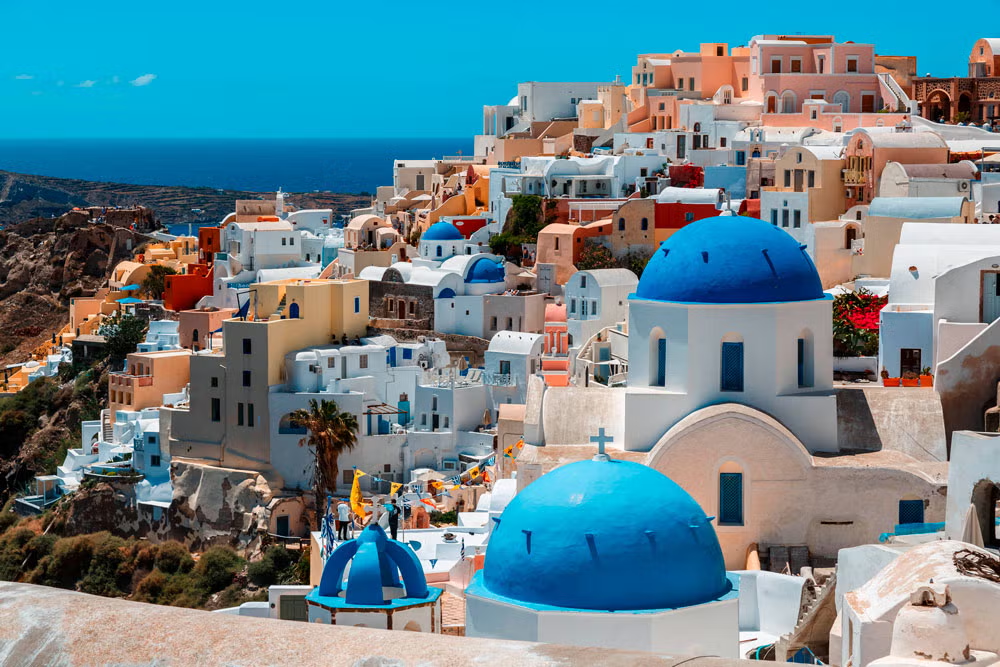
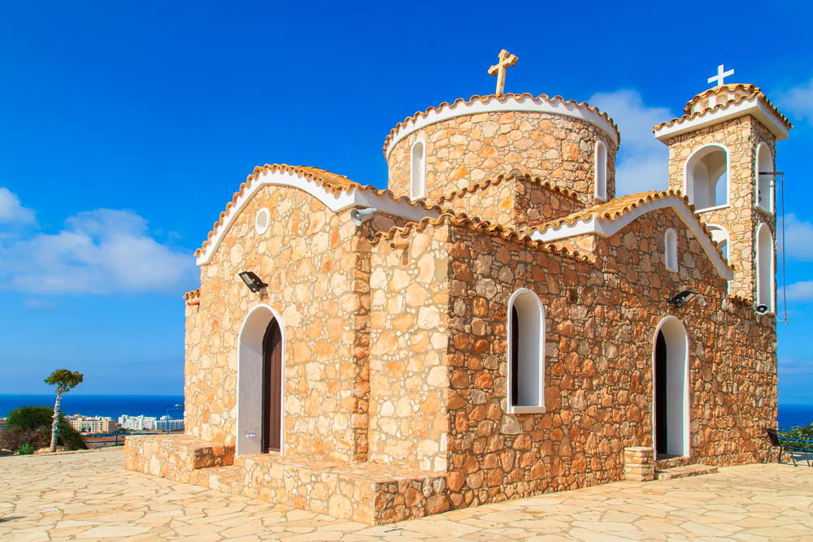
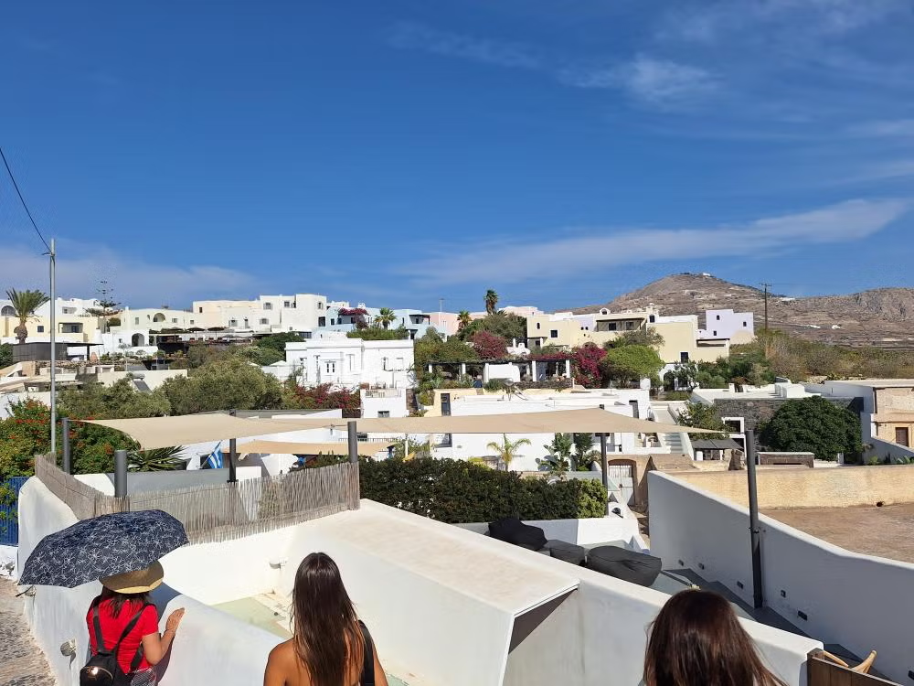
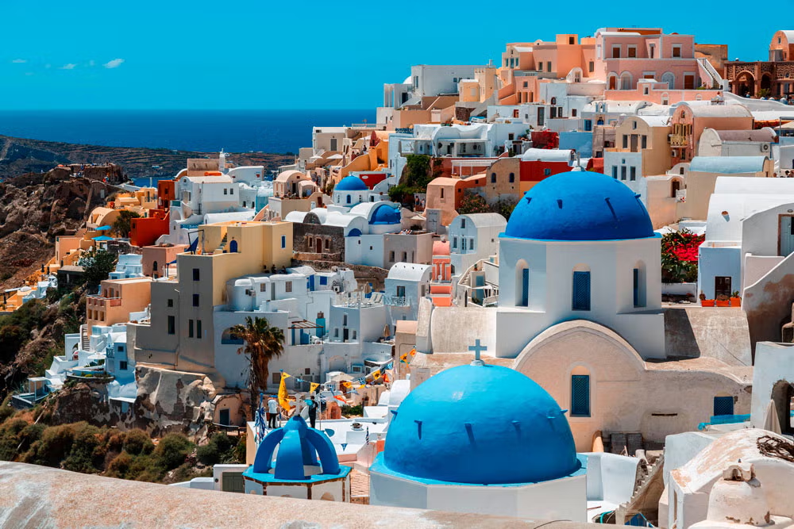
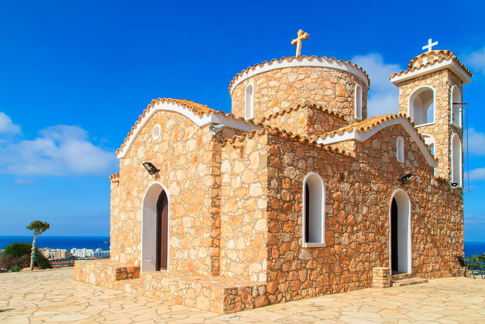
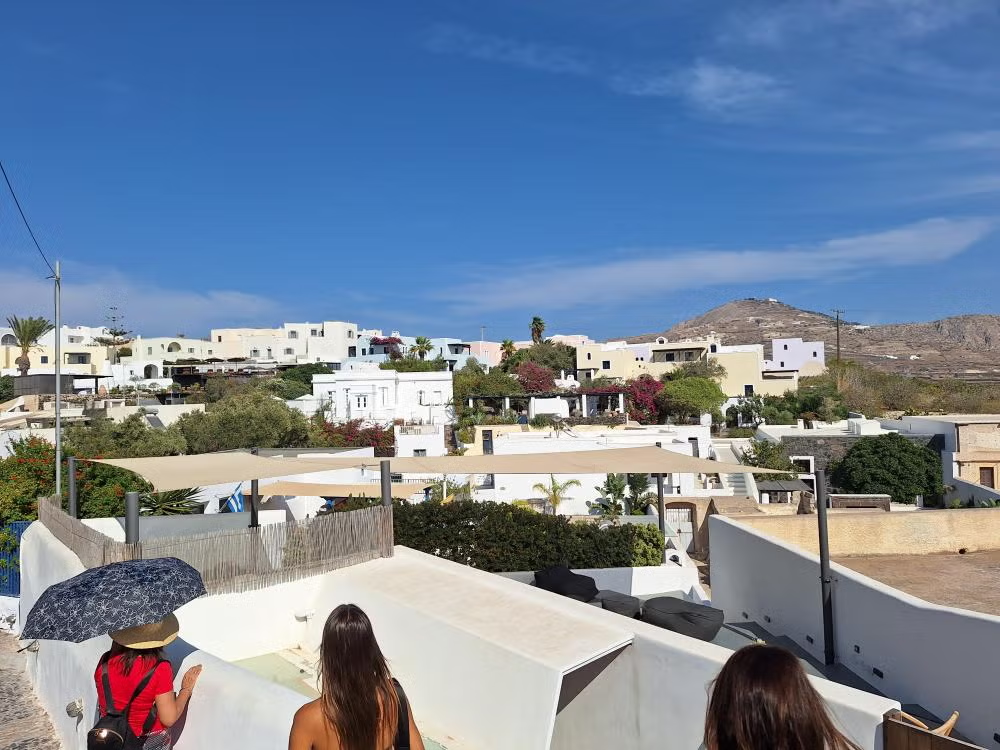

Belezas naturais
A Grécia é conhecida pela sua belza natural diversificada, desde montanhas imponentes até rios e ilhas paradisiacas
Corfu, a joia das ilhas gregas.
A maior das Ilhas Jônicas é um destino encantador de beleza natural espetacular. De fato, é apelidada de “ilha esmeralda” por sua paisagem verdejante de olivais e ciprestes.
Suas praias azul-turquesa e seu patrimônio medieval, escondido na capital. No centro histórico de Corfu, Patrimônio da Humanidade da Unesco, verá suas fortalezas venezianas neoclássicas, o elegante passeio marítimo com arcadas, a Catedral de Santo Espiridão, adornada com ícones sagrados, sem mencionar suas ruelas pitorescas.
Mapa de Corfu
Santorini, famosa e espetacular
Sendo uma das mais emblemáticas ilhas gregas, Santorini é um dos destinos mais populares para turistas, atraídos por suas emblemáticas casas brancas com telhados, portas e persianas azuis.
 





Ir a Santorini, não se pode perder a oportunidade de ir em um passeio de barco ao redor da sua caldeira, uma visita a Fira, a capital da ilha, e Oia. Em tour completo por Santorini, se poderá explorar esse povoado tradicional, considerado por muitos um dos lugares mais bonitos do mundo O pôr do sol aqui é espetacular!
Mapa de Santorini
Creta, a maior ilha da Grécia
Entre a história e beleza natural, a maior ilha da Grécia é imperdível. Há a oportunidade de nadar fazer uma excursão e admirar a praia rosa de Elafonisi, fazer snorkel em Agia Pelagia ou, se reservar uma excursão a Heraklion, explorar as ruínas palacianas de Knossos. Também há os povoados tradicionais encravados nas montanhas, pode se experimentar a autêntica culinária cretense e visitar mosteiros. Seja para aventuras ao ar livre, exploração cultural ou para relaxar à beira-mar, Creta oferece uma experiência inesquecível a cada visitante.
Mapa de Greta
Rodes, a ilha colossal
Uma das mais belas ilhas gregas, no arquipélago do Dodecaneso. Famosa nos tempos antigos pelo grande Colosso de Rodes, ela conseguiu manter seu charme, e o centro histórico da capital, também chamada Rodes, é Patrimônio da Humanidade da Unesco.
Na ilha de Rodes, os visistantes podem conhecer todos os seus pontos mais icônicos: o castelo de Kritinia, no topo do Monte Atavyrsos, o povoado de Embona, onde pode degustar vinho e azeite de oliva, visitar banhos termais, uma igreja bizantina e muito mais. Se caso preferire, uma atividade mais tranquila, pode fazer um passeio de barco pelas praias de Rodes e contemplar esse recanto do paraíso.
Mapa de Rodes
Monte Olimpo
De acordo com a mitologia grega, o Monte Olimpo era a casa dos deuses. Era nesse local, por trás das nuvens, que o deus artesão – Hefesto – construíra um palácio para abrigar as principais divindades da Grécia. Por outro lado, o Monte Olimpo é um lugar real. É o ponto mais alto da Grécia, com 2.917 m de altitude.


Sobretudo, o monte está situado ao norte do país, entre a Tessália e a Macedônia, próximo ao Mar Egeu. Exatamente por sua grandeza e imponência, o Monte Olimpo acabou sendo diretamente ligado aos deuses. Ou seja, uma vez que as divindades eram grandiosas e poderosas, deveriam morar num lugar de igual importância.